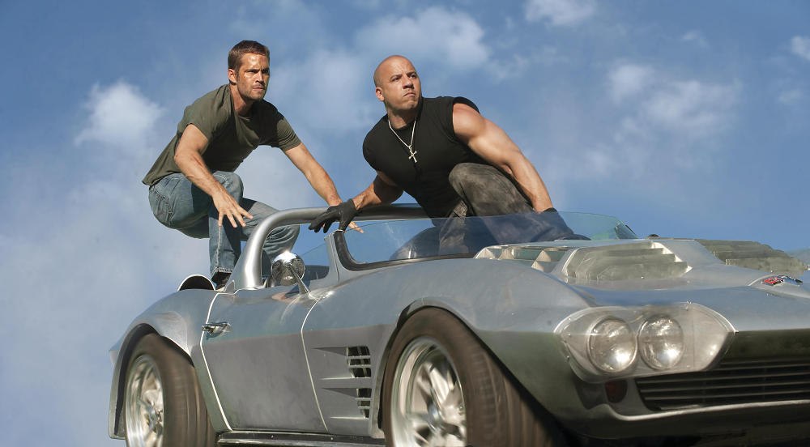
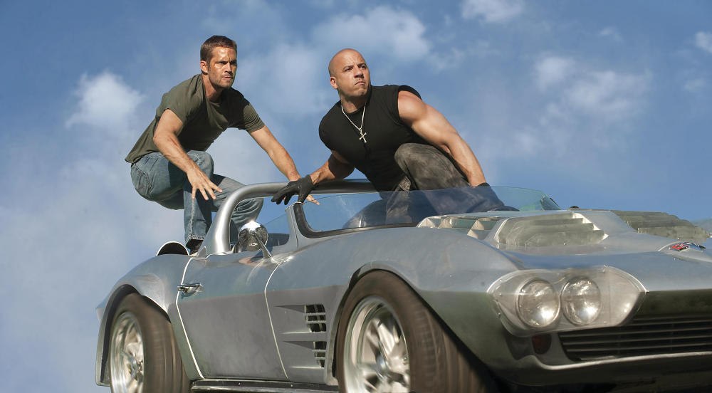
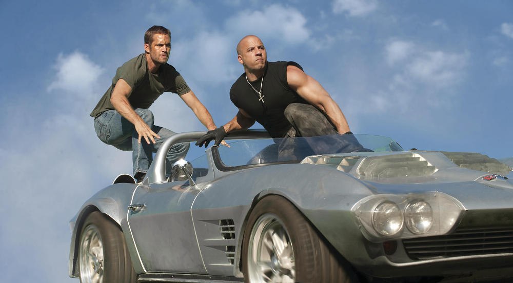
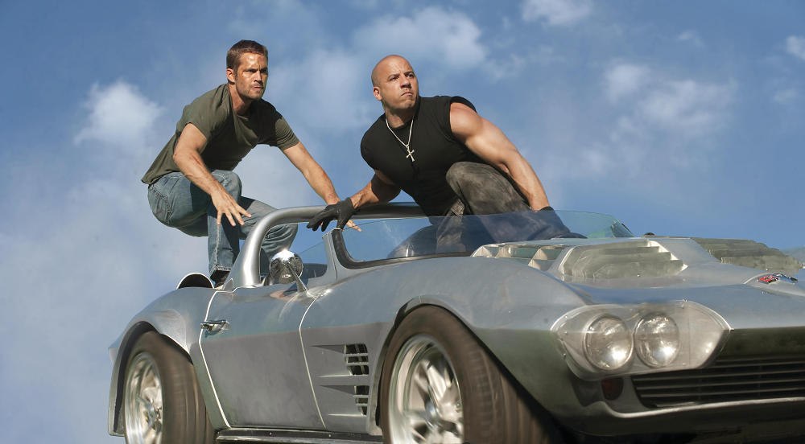

 

The Fast and the Furious : Dans le premier film de la franchise, le coureur de rue Brian O'Conner fait équipe avec l'ex-détenu Dominic Toretto pour enquêter sur une série de détournements de camions. En travaillant ensemble, ils s'impliquent dans un monde souterrain de courses et de crimes à enjeux élevés.
2 Fast 2 Furious : Dans le deuxième film, Brian O'Conner est recruté par le gouvernement américain pour infiltrer un gang de street racers à Miami. Il fait équipe avec son ancien ami d'enfance Roman Pearce et ensemble, ils doivent faire tomber un baron de la drogue et son empire.
The Fast and the Furious : Tokyo Drift : Le troisième film de la franchise suit Sean Boswell, passionné de voitures au lycée, alors qu'il déménage à Tokyo et s'implique dans la scène souterraine des courses de drift de la ville. Il se lie d'amitié avec Twinkie, un coureur local, et tombe amoureux de Neela, l'ex-petite amie d'un coureur rival.
Fast & Furious : Dans le quatrième film, Dominic Toretto et Brian O'Conner se réunissent pour vaincre un baron de la drogue responsable de la mort d'un ami proche. En cours de route, ils doivent également confronter leurs propres différences et conflits passés.
Fast Five : Dans le cinquième film, Dominic Toretto, Brian O'Conner et leur équipe fuient la loi et doivent réussir une série de cambriolages à enjeux élevés à Rio de Janeiro afin d'effacer leurs noms.
Fast & Furious 6 : Dans le sixième film, Dominic Toretto et Brian O'Conner font à nouveau équipe avec leur équipage pour vaincre un gang rival de mercenaires. En cours de route, ils doivent également composer avec le retour d'un ancien ennemi.
Furious 7 : Dans le septième film, l'équipe doit affronter une organisation terroriste et protéger la vie de l'un des leurs.
Le destin des furieux : Dans le huitième film, Dominic Toretto est contraint de travailler pour un cyberterroriste et doit être arrêté par son ancienne équipe.
Fast & Furious 9 : Dans le neuvième film, le jeune frère de Dominic Toretto, Jakob, devient une menace pour l'équipe et doit être arrêté.
Dans le dixième film, l'équipe doit affronter son ennemi le plus redoutable à ce jour, un cyberterroriste nommé Cipher qui contrôle une arme puissante.